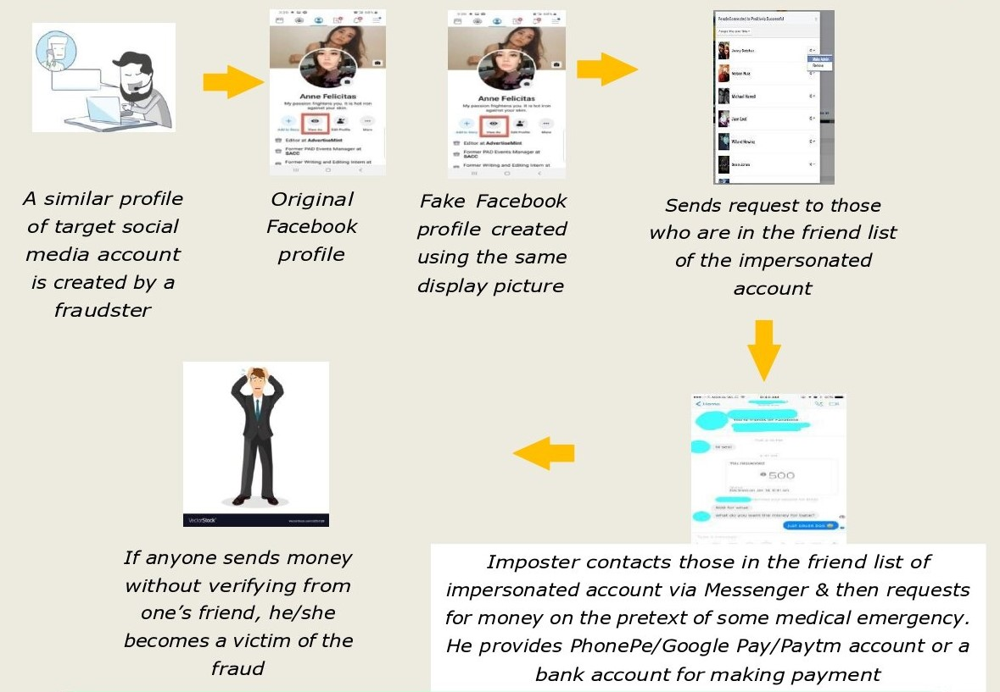
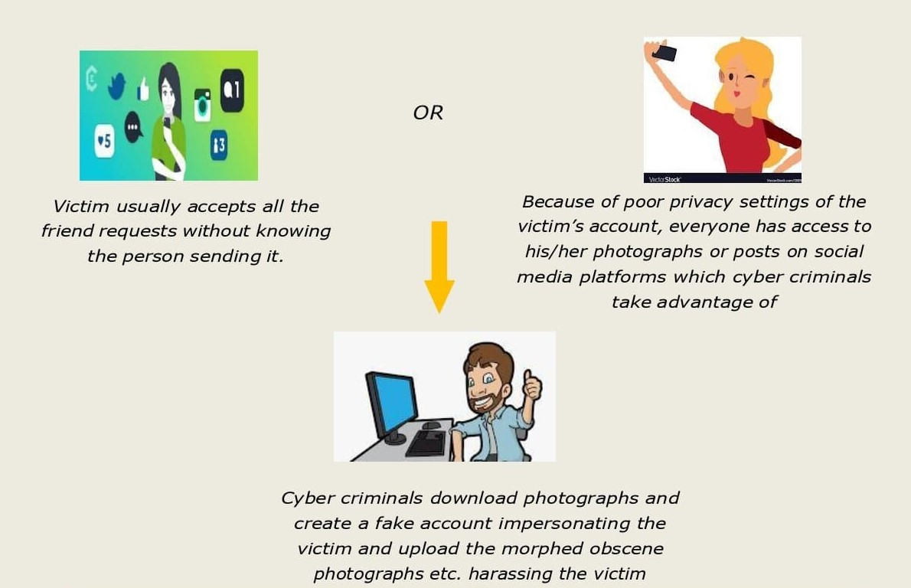
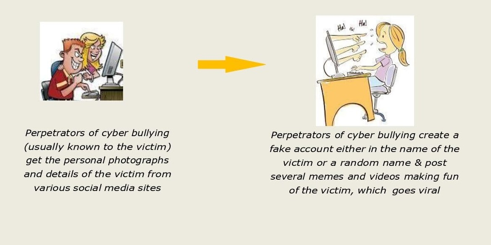
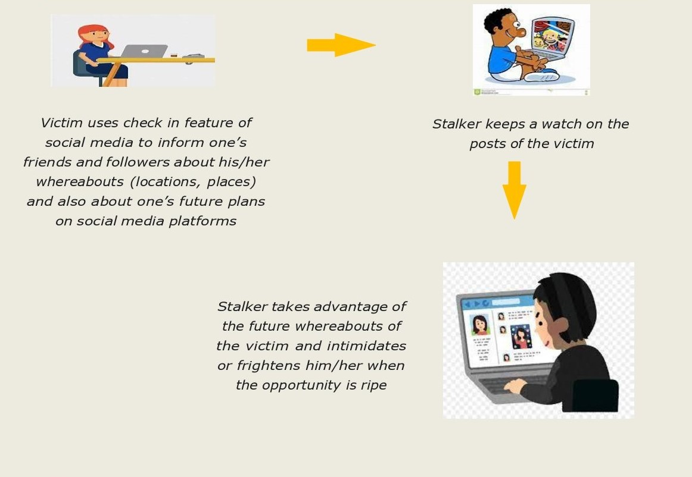

FRAUD USING FAKE SOCIAL MEDIA ACCOUNT
Fraudsters target accounts on popular social media platforms like Facebook and Instagram. They commit fraud by creating a similar fake account of the target profile and requesting his/her friends for instant money transfer citing some medical emergency etc. Target profile‟s friends transfer the money considering him/her as his/her friend. By the time the target profile comes to know of it, many of his friends become victims of the fraud. Similar fraud is also committed by hacking the target account.
precautions
- Keep the privacy setting as “My friends” only.
- Before transferring the money requested via Facebook, WhatsApp or other social media account, verify the authenticity of the message by meeting the concerned person or calling him.
- Turn on 2-step verification for all your social media accounts.
- Keep your password strong and maintain the privacy of the password.
SEXTORTION ON FACEBOOK
Live video chat is done on Facebook via Messenger by cyber criminals posing as female. Cyber criminals convince the victim for video call in compromising positions, following which fraudsters take screenshots of the same or do screen recording of the video call. Cyber criminals then threaten the victim to circulate the photographs/videos in compromising positions on various online platforms, if the demanded money is not paid.

precautions
- Avoid friendship with unknown people on social media platforms.
- Never make video calls to unknown people on Facebook or any other social media platform.
HARASSMENT THROUGH FAKE SOCIAL MEDIA PROFILES
Cyber criminals morph the photographs of the victim which they get from social media and upload it on social media platforms. After that they demand money to remove the morphed pictures from social media. Victim falls prey to the trap and transfers the money.
precautions
- Social media sites offer privacy settings to manage who can view your posts, photos, or send you friend request etc. Restrict access to your profile.
- Ensure your personal information, photos and videos are accessible only to your friends.
- Refrain from making friendship with unknown persons over social media platforms.
CYBER BULLYING ON SOCIAL MEDIA
Cyber bullying is bullying with the use of digital technologies. It can take place on social media, messaging platforms, gaming platforms etc. It is a sort of repeated behaviour, aimed . at scaring, angering or shaming those who are targeted. Examples include: spreading lies about or posting embarrassing photos of someone on social media, sending hurtful messages or threats via messaging platforms, impersonating someone and sending mean messages to others on his/her behalf.
precautions
- Learn about the privacy settings of the social media apps being used by you.
- Ensure your personal information, photos and videos are accessible only to your trusted ones.
- Think twice before posting or sharing anything online – it may stay online forever and could be used to harm you later.
- Make your children aware that cyber bullying is a punishable crime so that neither do they indulge in cyber bullying nor do they let anyone bully them.
- Report hurtful comments, messages and photos and request to the concerned Social Media Platforms to remove them. Besides „unfriending‟, you can completely block people to stop them from seeing your profile or contacting you.
CYBER STALKING
Cyber stalking is online stalking. It involves the repeated use of the internet or other electronic means to harass, intimidate or frighten a person or group. Common characteristics of cyber stalking may include false accusations or posting derogatory statements, monitoring someone‟s online activity or physical location. Cyber stalkers may use email, instant messages, phone calls, and other communication modes to stalk you. Cyber stalking can take the form of sexual harassment, inappropriate contact or an unwelcome attention in your life and your family‟s activities.
precautions
- Be careful while uploading your personal information, photos and videos on social media. Ensure that these are accessible only to your trusted ones.
- Never add unknown people to your friend list.
- Review all the privacy and security settings of social media and restrict them to “my friends only‟‟.